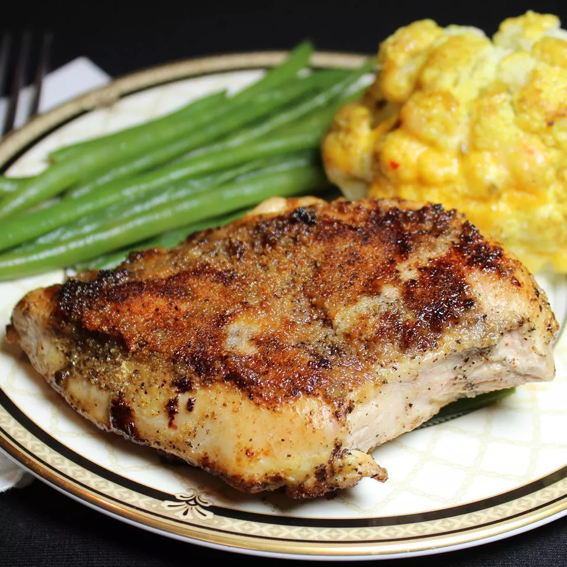

Lemon and Garlic Chicken

Description
I made this lemon garlic chicken randomly and it was delicious.
Ingredients
- 2 tablespoons butter
- 3 skinless, boneless chicken breast halves
- 1 ½ teaspoons salt
- 1 ½ teaspoons ground black pepper
- 2 tablespoons garlic powder, divided
- 1 lemon, juiced
Instructions
- Melt butter in a skillet over medium-high heat.
- Season chicken with salt and pepper; place in melted butter. Cook chicken, flipping frequently, until browned, about 5 minutes. Sprinkle 1 tablespoon garlic powder over chicken; cook for 2 minutes. Flip and sprinkle remaining 1 tablespoon garlic powder on the second side; cook for 2 minutes.
- Pour lemon juice over each side of chicken and cook until no longer pink in the center, 5 to 10 minutes more. An instant-read thermometer inserted into the center should read at least 165 degrees F (74 degrees C).